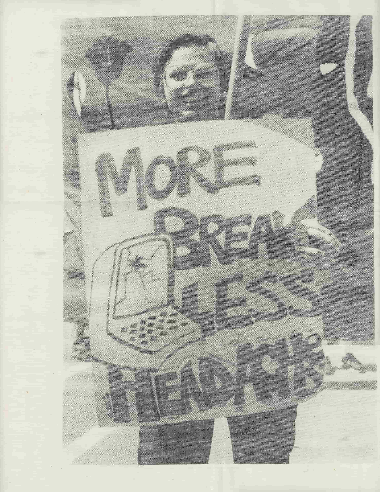
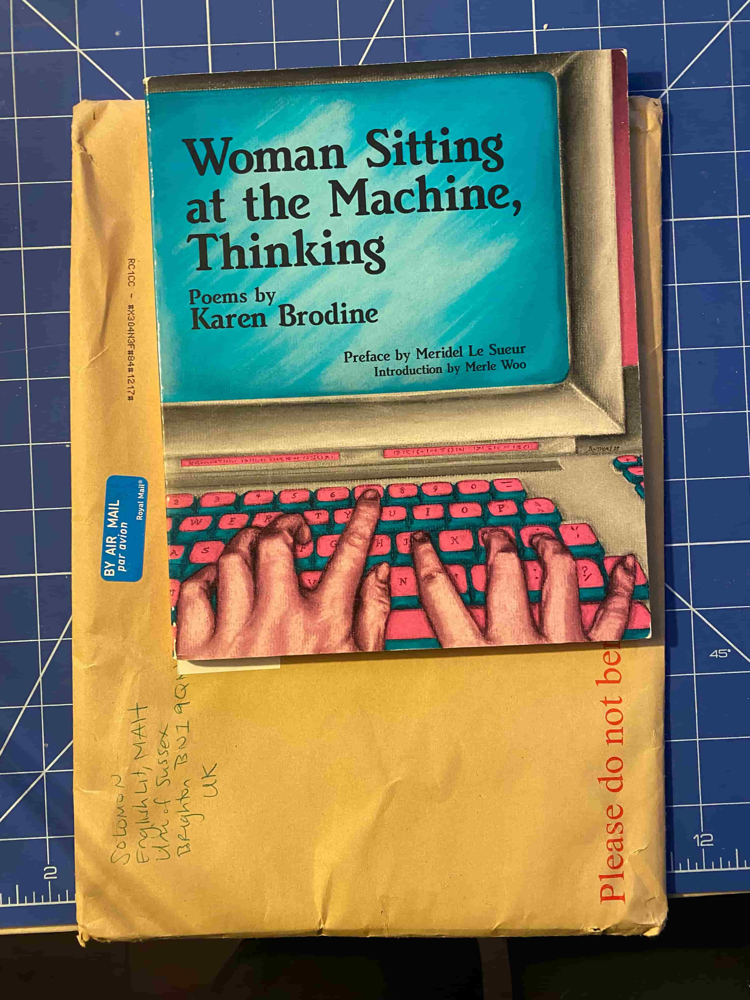

The center column of The Bitters Column is dedicated to a poet’s voice, sharing the work of critical thinker Karen Brodine, who has in many ways shaped the form of this publication. Karen Brodine was a Marxist-feminist writer, typesetter, activist, and poet, born in Seattle in 1947, and based in San Francisco until 1987, when she tragically passed away at the age of 40 from cancer, both related to the chemical processes of her work as a typesetter, and the medical profession that was profit-motivated and sexist to diagnose her in time.8
she thinks about everything at once without making a mistake.
no one has figured out how to keep her from doing this thinking.
— Karen Brodine, Woman Sitting at the Machine, Thinking
Woman Sitting at the Machine, Thinking
8. Janet Sutherland,
Karen Brodine: Poet, Feminist, Revolutionary, 1947 – 1987, in
Freedom Socialist, 1988.
9. Brodine worked at Howard Quinn Co. between
1975 – 86.
In 1975, Karen Brodine turned to typesetting to support her livelihood — a skill she loved for its integration of language, and found employment amongst other working-class LGBTQ+ people.9 In her final book, ‘Woman Sitting at the Machine, Thinking’ (1990), Brodine talks about the labor relations of typesetting, and in the poem with the same title (1981), she is writing as a typesetter who not only reproduces information but thinks critically while she works. The poem records Brodine at work, as she hates her boss, sympathizes with her colleagues, and daydreams.[Fig. 4]

In reading it 45 years later, her poem got me thinking about typographic labor and collectively in relation to a contemporary feminist graphic design practice.10 This publication engages with a part of Brodine’s poem, where she writes:
10. Such as Loraine Further.
knowledge this power owned, not shared
owned and hoarded
to white men, lock stock dollar
skill passed down from manager
to steal, wrench it back
knowledge is something we have
this is the bitters column (...)
to take to take it back
and open and ribbon out and
share
The Bitters Column.11
11. Karen Brodine, Woman Sitting at the Machine, Thinking, (Seattle: Red Letter Press, 1990), 11.
What Brodine proposes is for people to take back their knowledge and skills that originate from oppressive structures of capitalism, racism and patriarchy, to share new forms of their skilled work — placing the means of production in the hands of the workers. For this project, I borrowed her term The Bitters Column, to open, ribbon out, and share thoughts on graphic design work through typesetting, editing, and publishing.
In a conversation with publisher Phil Baber about Brodine’s work, he emphasised knowing our history of graphic design, understanding that our practice was formed by the working class which had agency on structures. In his work that entails typesetting, he finds pleasure in breaking the lines on the page. Baber brings up Cynthia Cockburn’s book (1983), where she writes about the technological shift for compositor workers (typesetters) from Monotype and Linotype hot-metal typesetting to phototypesetting in the end of the ’70s. The new technology took away the skill of the worker’s autonomy to self decide where to break their lines. The deskilled worker altered the gendered structure of the workplace, allowing more women to enter the labor, yet the new jobs were framed as repetitive, automatic, lower-paid, and subordinate. As one of the male compositors said:
12. Cockburn, Brothers, in Male Dominance and Technological Change (London: Pluto Press, 1983), 118.
If girls can do it, you know, then you are sort of deskilled you know, really.12
Brodine was a skilled worker, framed within the new technology of phototypesetting and working under management, where ideals were not always in practice. However, she was looking for pleasures at work, and if the breaking one’s own lines suggests a sense of freedom, Brodine found inspiration through acts of sabotage, such as sneaking her poetry into the machine:
a typesetter changes man to person will they catch her?
She files one job under union,
another under lagoon,
another under cash
what if you could send anything in and call it out again?
I file jobs under words I like — red, buzz, fury
search for tiger, execute
the words stream up the screen till tiger trips the halt
search for seal search for strike
search for the names of women13
13. Brodine, Woman Sitting at the Machine, Thinking, 17.
Here, Brodine (woman at the machine), engages in various forms of resistance including collective action. The French term La perrugue translates to the wig, and was used by philosopher Michel de Certeau to describe the ‘worker’s own work disguised as work for his employer’.14 The wig applies to Brodine, in her use of skills as a typesetter, poet, and organiser, as a source of joy and as a generative part of being with others, rejecting the rhetoric of deskilling associated with feminized labor.
14. Certeau, The Practice of Everyday Life, (Berkeley: University of California Press, 1984), 25.
Brodine’s action motivated the title of this text, as I shifted the pronoun from ‘Woman…’ to ‘Women* Sitting at the Machine, Thinking’, as I’m actively looking at women and queer editorial practices, addressing the multitude ‘Sitting at the Machine, Thinking’.
Poet and academic writer Samuel Solomon reflects on the title of Brodine’s poem in his essay (2018), on how LBTQ+ and feminists navigated the shifts in typesetting technologies:
The placement of thinking after the comma affords some ambiguity about the agent of the thinking: woman, machine, or woman-machine. That is thinking, is conditioned by rather than simply outside of or beyond the relations of feminized wage labor.15
15. Solomon, Offsetting Queer Literary Labor, Version 1 (University of Sussex, 2018), 28.
Solomon brings me back to how working conditions shape our thinking of work, determining a one’s feelings of loneliness and belonging. In March 2026, we spoke over zoom about Brodine’s work. [Fig. 5] Solomon said that part of what her poem imagines is you just get rid of the managers, and that you all controlled everything: to seize the means of production. As it’s harder to apply in all aspects of digital graphic design and dealing with cloud servers, he asked, ‘What would it mean to own it and hold it? Where is it? Can you take it?’ In my response, resistance and sabotage inside the software (that is no better than a boss or a landlord), can’t apply in the same way because of its invisibility: to file jobs under strike or fury will do no harm. Instead, I come back to collaboration as how to approach graphic design tools critically. To design side-by-side in a software that was built to isolate the individual is potentially a form of resistance. Brodine’s work is interesting as it’s both so collective and in the interior of one person at the same time, giving it richness and breadth, because it’s not as simple as saying collective and therefore individuals don’t matter.

The conversation with Solomon made me think that the desire for some other mode of being in the world is connected to trying to understand the conditions we live and operate within. Thus, I turn to Brodine’s thinking as a critical editorial practice, questioning our skills as graphic designers and how we want to use them: be it in a linebreak, protesting, or taking turns on the keyboard.